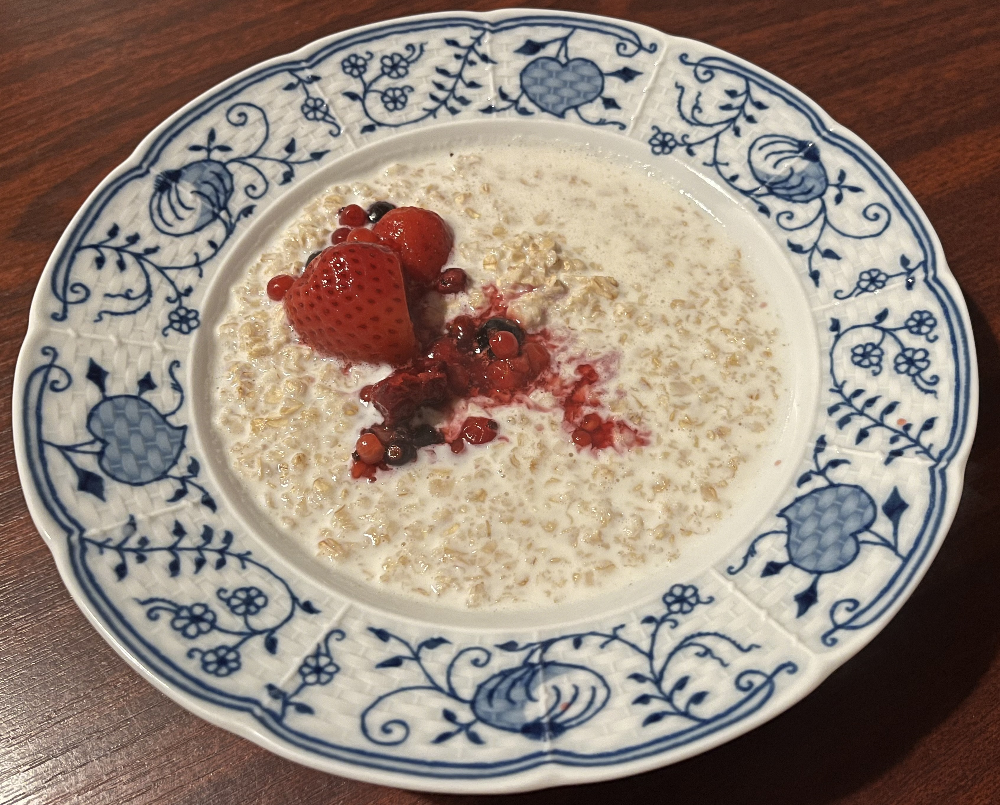

Description
A simple, quick and affordable oatmeal porridge with cottage cheese and dark chocolate.
Ingredients
Required
- 50?? g buckwheat
- 150?? ml water
- 57 g Bio corn
- -----
If you weigh all your ingredients, you can avoid food waste.
Optional
- Nuts, fresh fruit or frozen fruit, according to your taste.
Steps
- Dej do hrnce 50??g pohanky a pridej 150?? ml vody. Dej na ohen na 13 min (zelzi na odrude pohanky)
- Remove the saucepan from the heat. Place the porridge on a plate with the cottage cheese, add the dark chocolate and any additional toppings you like.
Enjoy your meal!
Score
Pohanka (50 g) : 3 kc
Voda (150 g): 0 kc
Tuna --- g
57 g BIO kukurice
Total: 15 CZK
Price per portion in eur
1
2
3
4
5
Preparation time in min
10
20
30
40
50
Health rating
A
B
C
D
E